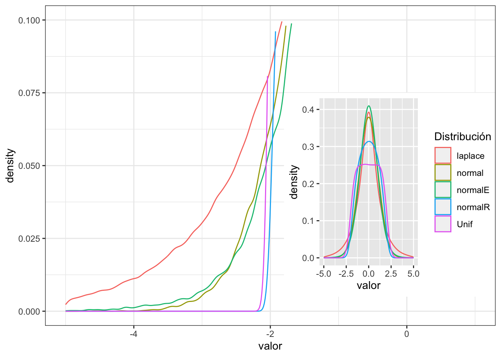
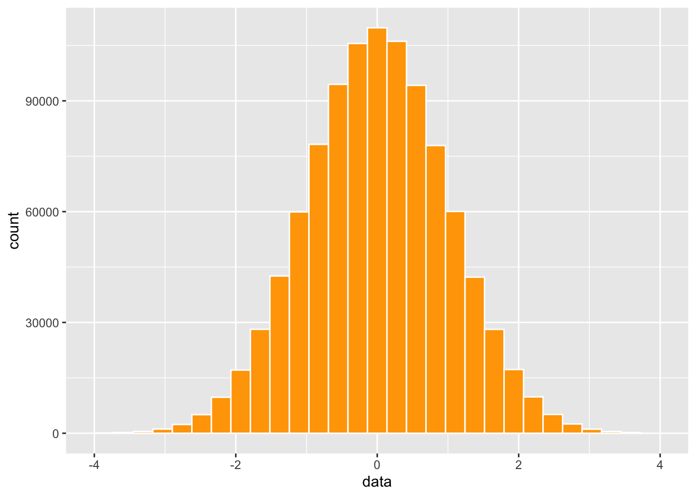

Chapter 10 El indice de Curtosis: Kurtosis
El indice de curtosis es un índice que describe la cola de la una distribución alrededor de su promedio. Otra manera de describirlo es el cuarto momento, por que los datos se poner a un exponente elevado al ^4. El curtosis mide la propensidad de tener daos atípicos.
La formula es la siguiente. Lo que se darán cuenta es muy similar a la varianza pero note que las diferencias se poner al ^4. Para más información vea este enlace https://www.wikiwand.com/en/Kurtosis.
\[\frac{1}{N}\sum_{i=}^N\left(\frac{x_i-\overline{x}}{\sigma}\right)^4\]
Primero voy a crear cuatro conjuntos de datos
- con distribución normal
- con distribución normal, con cola reducida
- con distribución normal, con cola extendida
- distribución uniforme
##
## Attaching package: 'rmutil'## The following object is masked from 'package:tidyr':
##
## nesting## The following object is masked from 'package:psych':
##
## plot.residuals## The following object is masked from 'package:stats':
##
## nobs## The following objects are masked from 'package:base':
##
## as.data.frame, unitsmomentsR=c(mean=0, variance=1, skewness=0, kurtosis=2)
momentsE=c(mean=0, variance=1, skewness=0, kurtosis=4)
normalR=rpearson(100000, moments=momentsR)
normalE=rpearson(100000, moments=momentsE)
Unif=runif(100000, -2,2)
normal=rnorm(100000, 0,1)
laplace=rlaplace(500000, m=0, s=1)
normal=as.tibble(normal)
normalR=as.tibble(normalR)
normalE=as.tibble(normalE)
Unif=as.tibble(Unif)
laplace=as.tibble(laplace)Ahora unimos los data frames y se añade nombres a las columnas
## value value value value value
## 1 0.2441467 0.1508835 1.44335301 -1.919255 2.303018
## 2 0.8828321 -0.6734737 -0.03927873 1.892693 1.297549## normal normalR normalE Unif laplace
## 1 0.2441467 0.1508835 1.44335301 -1.919255 2.303018
## 2 0.8828321 -0.6734737 -0.03927873 1.892693 1.297549El próximo paso es apilar cada columna una sobre la otra. La razón que queremos esto es que deseamos reproducir las variables en un mismo gráfico
library(tidyverse)
df2=df%>%
gather(key = "Distribución", value="valor", c(normal, normalR, normalE, Unif, laplace))
head(df2, n=3)## Distribución valor
## 1 normal 0.2441467
## 2 normal 0.8828321
## 3 normal -0.3768032Ahora vamos a ver los datos en un gráfico. Vemos que la distribución de los datos son muy diferentes, Tiene que concentrar no en el pico de la distribución pero las colas de los datos. Nota la distribución normal que es de color amarillo, y comparar si la colas están por debajo o por encima de esta distribución normal.
Tanto la distribución uniforme (color rosa) y normal reducido (normalR, color azul) las curvas pasan de bajo la curva normal. Al contrarío la linea verde y roja son distribuciones que pasan por encima de la curva normal, entonces las colas son más predominante.
whole=ggplot(df2, (aes(valor, colour=Distribución)))+
geom_density(adjust=5)+
xlim(-5,5)
ggsave("Graficos/curtosis_whole.png")## Saving 7 x 5 in image## Warning: Removed 3469 rows containing non-finite values (`stat_density()`).sub=ggplot(df2, (aes(valor, colour=Distribución)))+
geom_density()+
theme_bw() +
scale_x_continuous(limits=c(-5, 1)) +
scale_y_continuous(limits=c(0, .1)) +
theme(legend.position= "none")
ggsave("Graficos/curtosis.png")## Saving 7 x 5 in image## Warning: Removed 467223 rows containing non-finite values (`stat_density()`).## Warning: Removed 3469 rows containing non-finite values (`stat_density()`).## Warning: Removed 467223 rows containing non-finite values (`stat_density()`).
Ahora se calcula el indice de curtosis y comparamos los valores. Como regla el nivel de curtosis esta significativo si los valores de curtosis se enuentra en los siguientes rangos, y se acerca cero no hay curtosis (lo que uno espera para una distribución normal.
- Menor de -1.0 los datos están muy aplanados (Uniforme, normalR).
- Mayor de 1.0 (la distribución de Laplace).
Ahora evaluamos la oblicuidad de los tres gráficos. se usa la función de kurtosis en el paquete e1071
Para los datos de una distribución normal el valor es muy cerca a cero. Para los datos que tienen exceso de cola el valor de curtosis es negativos y cuando el valor de curtosis es positivo hay exceso de datos en la cola.
## [1] -0.009018931## [1] -1.003078## [1] 0.9957227## [1] -1.197449## [1] 3.014414Quiz 1
Quiz 2
Quiz 3
## data
## 1 2.2139887
## 2 1.8728691
## 3 2.4129221
## 4 0.1460366
## 5 0.6036718
## 6 -0.2040952## `stat_bin()` using `bins = 30`. Pick better value with `binwidth`.## Warning: Removed 80 rows containing non-finite values (`stat_bin()`).## Warning: Removed 2 rows containing missing values (`geom_bar()`).
## Saving 7 x 5 in image
## `stat_bin()` using `bins = 30`. Pick better value with `binwidth`.## Warning: Removed 80 rows containing non-finite values (`stat_bin()`).
## Removed 2 rows containing missing values (`geom_bar()`).